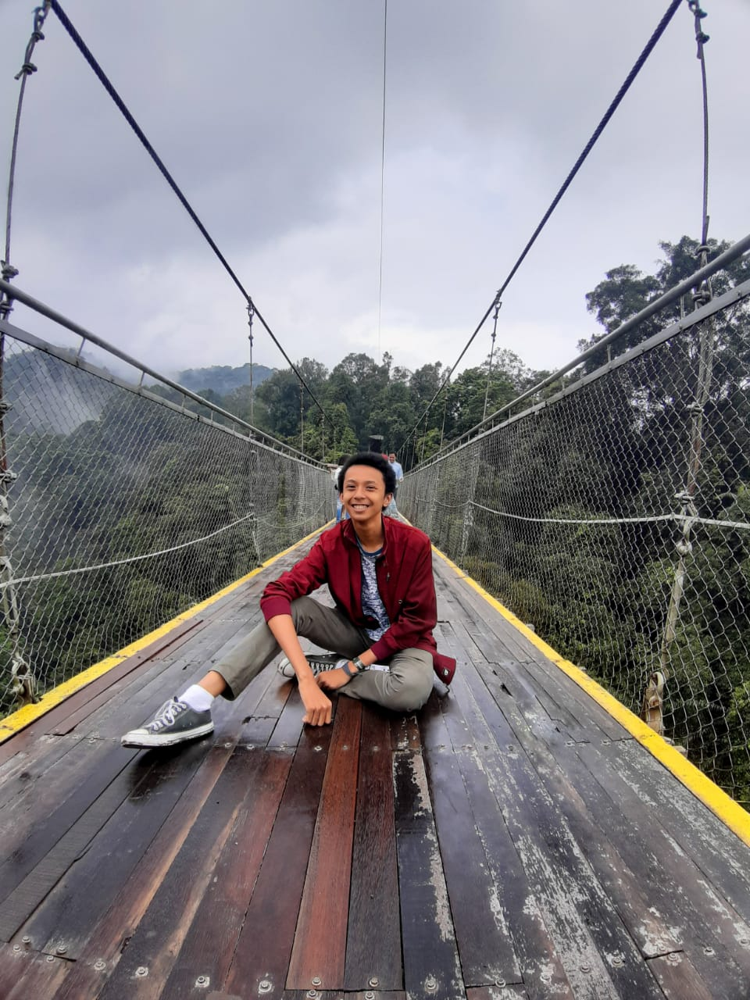

Halo, nama saya Fredly Andrias Nussy, biasanya dipanggil Fredly, saya lahir di Jakarta tanggal 9 Oktober 2003. Saya tinggal di Depok dan bersekolah di SMK-SMAKBO. Hobi saya belajar dan bermain di luar rumah. Saya mempunyai berat badan 50 kg, dan tinggi 170cm. Dikarenakan saya bersekolah di Bogor maka saya harus tinggal di salah satu tempat kos di Bogor. Makanan favorit saya adalah
Bersekolah di Bogor tidak menyenangkan bagi saya sejujurnya. Namun, saya terpaksa harus menyelesaikan pembelajaran saya di Bogor. Tetapi, dengan segala yang tersedia di sekolah, seperti pertemanan dan lain sebagainya juga tentu merupakan satu hal yang membuat saya bertahan di sekolah saya di Bogor. Cita-cita saya adalah menjadi seorang Pilot. Mungkin setelah saya menjadi analis kimia, saya akan melanjutkan perjuangan menggapai cita-cita saya menjadi seorang Pilot. Sekian perkenalan saya dari saya. Terimakasih
